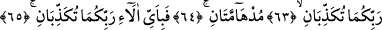
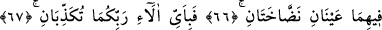
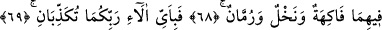
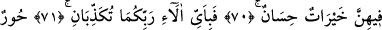
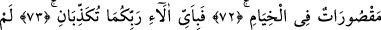
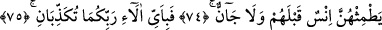
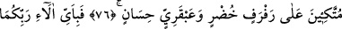
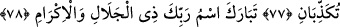

RABBİNİN ADI
YÜCELERDEN YÜCEDİR
61. Öyleyken Rabbinizin hangi nimetlerini yalanlayabilirsiniz?
62. Bu ikisinden başka iki cennet daha vardır.
63. Öyleyken Rabbinizin hangi nimetlerini yalanlayabilirsiniz?
64. Bu cennetler koyu yeşildirler.
65. Öyleyken Rabbinizin hangi nimetlerini yalanlayabilirsiniz?
66. İkisinde de durmadan fışkıran iki kaynak vardır.
67. Öyleyken Rabbinizin hangi nimetlerini yalanlayabilirsiniz?
68. İkisinde de her türlü meyveler, hurma ve nar vardır.
69. Öyleyken Rabbinizin hangi nimetlerini yalanlayabilirsiniz?
70. İçlerinde huyu güzel yüzü güzel kadınlar vardır.
71. Öyleyken Rabbinizin hangi nimetlerini yalanlayabilirsiniz?
72. Otağlar içinde sâhiplerine tahsis edilmiş hûriler vardır.
73. Öyleyken Rabbinizin hangi nimetlerini yalanlayabilirsiniz?
74. Bunlara onlardan önce ne bir insan ne bir cin dokunmuştur.
75. Öyleyken Rabbinizin hangi nimetlerini yalanlayabilirsiniz?
76. Yeşil yastıklara ve hârikulâde güzel döşemelere yaslanırlar.
77. Öyleyken Rabbinizin hangi nimetlerini yalanlayabilirsiniz?
78. Büyüklük ve ikram sâhibi Rabbinin adı yücelerden yücedir.
“Öyleyken Rabbinizin hangi nimetlerini yalanlayabilirsiniz?” Bunlar dünya ve